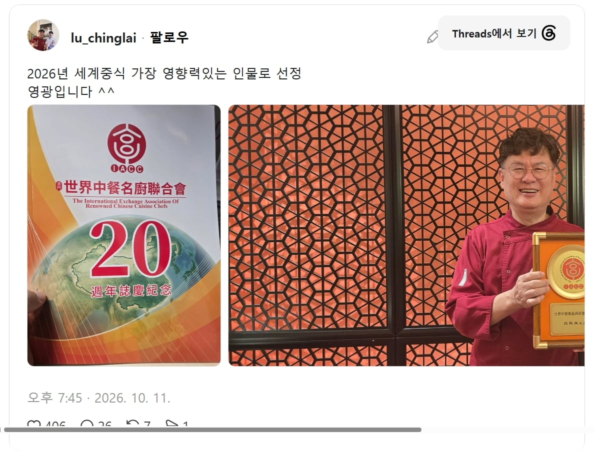

세계 중식 1황 ㄷㄷㄷ

세계 중식 1황 ㄷㄷㄷ

형제분들이 대단하심
대단하시네... 제자도 진짜 많더라
그건 그렇고 액자가 너무 구리네 식용유통 들고있는줄
저게 중국 갬성이라서 그럴싸하고 멋져보이면 오히려 짝퉁임.
이거 ㅇㅈ ㅋㅋㅋ 중잘알이네
알리나 타오바오 뭐 주문할때도
상세페이지가 개 짜치면 물건 괜찮더라
그게 광저우 상인의 참맛이지
시발 나도 ㅋㅋㅋㅋㅋㅋㅋㅋ 순간 왜 해표 식용유통 들고 싱글벙글하고 계시지 했다
중국 스마트폰 뻘건색 금색 도배한거 보면 진짜 촌스럽던데 저것도 그런 느낌이네
원래부터 유명하긴했지
엄마아빠 세대는 동생분이 훨씬 인지도있다고 하시네
원래 여경옥쉐프가 먼저 방송에 뜨기는 하셨지
대 경 래
글로벌 어워드인데 중식에서 한국인이 1위면.. 중국새키들은 대체 뭐하냐.
우리로 치면 전세계 한식 어워드 1위가 일본새키인거잖아.
여경래 셰프 대만분이심
탬플릿인데....
아 그래? 몰랐음..
는 구라임ㅋㅋㅋ
ㄹㅇ 개쩌네 중식1황이 한국인인 걸 그 중국인들이 인정할 정도면 대체 얼마나 대단한 건지 감도 안옴
대만분임
그래도 메인무대가 한국아닌가 싶기도한데 암튼 대단하신듯
한국인아님ㅋㅋ
엥 ㄹㅇ???
나 방금 세상이 무너졌어
아버지가 대만인 화교에 어머니가 한국인인데, 옛날에 한국 법이 부계혈통주의라 아버지 국적 따라감. 태어나서 자란 곳은 한국임. 한국 국적 취득하지 못한 이유는 귀화 시험이 너무 어려워서라고 함. 가족들도 귀화시험 여러번 떨어졌고 동생인 여경옥 셰프는 한국 국적 취득함.
애초 중식으로 워낙 유명하신 분이라서 뭐 당연한거 같음 ㅋㅋ
저 분이 직접 만드는 중식 코스 죽기 전에 한 번 정도는 먹어보고싶네
애초에 중십협회부회장인가 그랬을걸
제자가 진짜 개많아서 받으신 거 같음
와 이건 정말 가문의 영광이네
솔까 중국 자국내에서 중식하는게 뭔 소용 요즘대세인 한국에서 중식하는게 세계적으로 더 영향력이 있는게 당연
거기다 제자 박은영까지 방송가랑 유튜브에서도 날라다니고 또 동생까지 중식셰프
주식도 잘하시는 킹경래
대 경 래
가장??
인상 너무 좋아보임